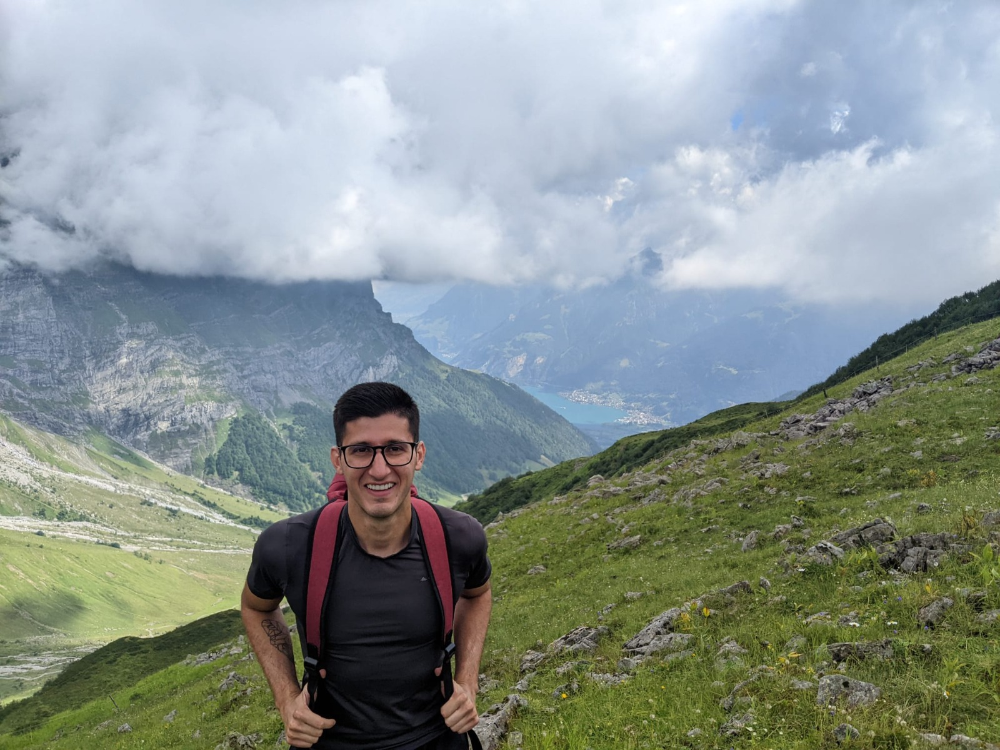
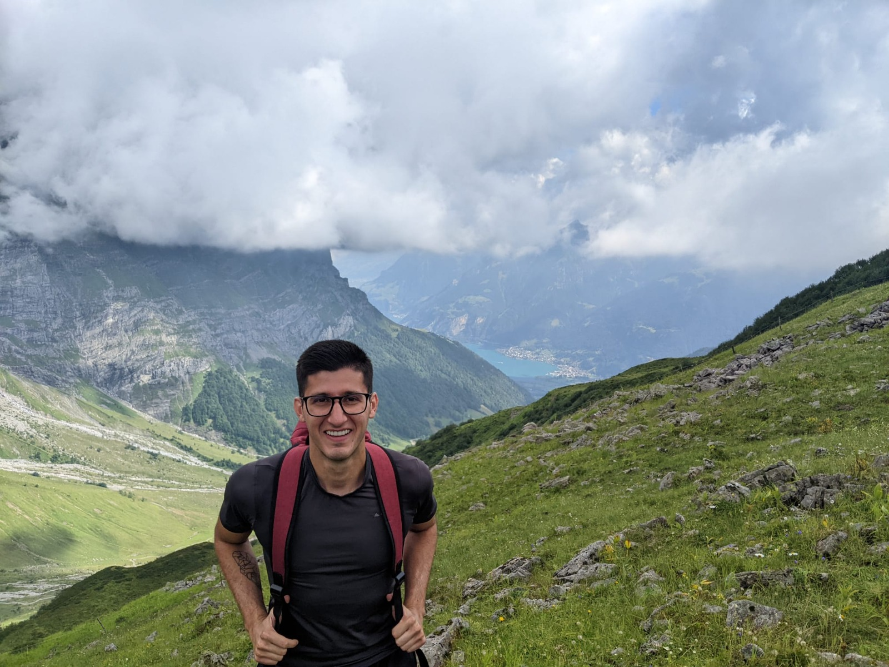

About Me!
Since high school, I've known I wanted to be a biologist. My passion for ecology and the complex mechanisms of nature was ignited during my bachelor’s studies. Originally from Ivorá, a charming countryside town nestled between the Atlantic Forest and the Pampa grasslands in southern Brazil, my roots have deeply influenced my love for the natural world. I pursued my undergraduate and graduate studies in Santa Maria, Rio Grande do Sul, Brazil, where my academic journey started.
When I'm not immersed in research, I enjoy being outdoors. I like playing football, volleyball, paddleboarding, and hiking. These activities keep me active and deepen my appreciation for the environment.
 

Professional Experience
2024 - Present
Postdoctoral Fellow Researcher
Czech Academy of Sciences, Czech Republic
Researcher at the project STANDARD – Diversity dynamics across scales (PI Antonin Machac)
2023 - Present
Postdoctoral Fellow Researcher
Charles University, Czech Republic
Researcher at the project EXPRO – The equilibrium theory of biodiversity dynamics – macroecological perspective (PI David Storch)
2021 - 2022
Visiting PhD Student
Swiss Federal Research Institute for Forest, Snow and Landscape (WSL), Switzerland
Research theme: Accelerated body size evolution in upland environments drives recent speciation in South American freshwater fishes
2017 - 2023
Postgraduate Student Researcher
Federal University of Santa Maria, Brazil
Performed research related to my MSc and PhD studies (see details below)
Education
PhD - Animal Biodiversity
2019 - 2023
Federal University of Santa Maria, Brazil
PhD theme: The role of evolutionary and ecological processes in species diversity and coloration patterns (PI Cristian Dambros)
MSc - Animal Biodiversity
2017 - 2019
Federal University of Santa Maria, Brazil
MSc theme: Effects of productivity on speciation-extinction dynamics drive the latitudinal diversity gradient of South American small mammals (PI Cristian Dambros)
BSc - Biological Sciences
2013 - 2017
Federal University of Santa Maria, Brazil
BSc theme: Adaptive evolution of facial coloration patterns in didelphid marsupials (PI Nilton Cáceres)